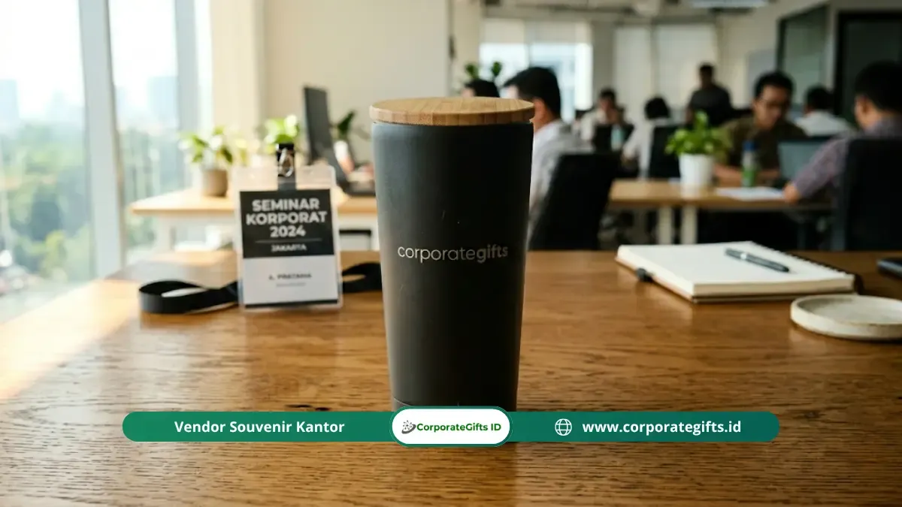

Corporate Gifts ID - Tumbler berlogo dan totebag kanvas adalah dua item dalam paket goodie bag seminar korporat yang paling efektif dalam memperluas jangkauan brand exposure. Keduanya dirancang untuk dibawa dan digunakan oleh peserta di ruang publik, bukan sekadar disimpan di laci meja kantor.
Tumbler stainless steel double-wall mempertahankan suhu minuman sepanjang hari sekaligus memamerkan identitas perusahaan Anda. Sementara itu, totebag kanvas bermutu tinggi berfungsi ganda sebagai wadah kemasan seminar kit yang ramah lingkungan sekaligus tas jinjing harian. Kombinasi keduanya menghadirkan dampak promosi organik berkesinambungan di dua ranah: meja kerja dan aktivitas luar ruang.
Poin Kunci Goodie Bag Tumbler & Totebag:
- Standar Material Premium: Tumbler stainless steel 304 food-grade double-wall dan kain kanvas tebal minimal 280 GSM.
- Daya Pakai Berkelanjutan: Menghasilkan lebih dari 1.400 impresi brand per item selama masa pakai aktif di ruang publik.
- Ketahanan Cetak Logo: Aplikasi grafir laser presisi dan sablon manual tahan cuci memastikan visual merek tetap prima.
- Desain Tidak Kaku: Pendekatan visual tipografi modern mendorong peserta memakainya secara sukarela pasca acara.
Mengapa Tumbler dan Totebag Sangat Efektif?
Berdasarkan riset Global Ad Impressions Study oleh Advertising Specialty Institute (ASI), produk drinkware promosi seperti tumbler menghasilkan rata-rata lebih dari 1.400 impresi visual selama masa pakainya.
Saat peserta membawa tumbler ke ruang rapat, pusat kebugaran, atau kafe, logo perusahaan Anda disaksikan oleh puluhan orang setiap hari. Efek serupa terjadi pada totebag canvas berlogo yang digunakan saat berbelanja atau berkomuter di transportasi publik, menjadikannya media promosi berjalan dengan rasio biaya per impresi paling efisien.
Spesifikasi Tumbler Stainless Standar 2026
Untuk memastikan cinderamata memberikan impresi eksklusif dan aman bagi kesehatan penerima, pastikan spesifikasi memenuhi standar berikut:
1. Material Stainless Steel SUS304 Food-Grade
Pilihlah bodi bagian dalam berbahan stainless steel SUS304 (18/8) yang tersertifikasi bebas karat dan aman terhadap minuman asam seperti kopi atau infused water. Hindari tumbler plastik tipis yang rentan berbau dan berisiko bagi kesehatan.
2. Insulasi Vakum Ganda (Double-Wall Vacuum)
Teknologi dinding ganda hampa udara menjaga minuman panas tetap hangat selama 6 hingga 8 jam, serta minuman dingin tetap segar hingga 12 jam tanpa menimbulkan kondensasi (embun basah) pada dinding luar tumbler.
3. Kapasitas Ideal & Tutup Anti Bocor
Ukuran 450ml hingga 500ml adalah volume paling ergonomis untuk mobilitas kerja harian. Pastikan tutup dilengkapi segel karet silikon food-grade rapat dengan sistem flip-top atau screw-cap anti tumpah.

Tumbler vacuum stainless steel berfinishing matte hitam berpadu tutup kayu bambu alami dengan grafir logo presisi di ruang kerja kantor.
Teknik Cetak Logo pada Tumbler untuk Daya Tahan Maksimal
Pemilihan metode cetak menentukan usia visual logo pada permukaan tumbler:
- Grafir Laser (Laser Engraving): Metode terbaik yang mengikis lapisan coating luar untuk menampilkan kilau perak metalik di bawahnya. Hasil permanen, anti luntur, dan tahan pencucian berulang kali.
- UV Printing Full Color: Solusi tepat untuk logo korporat yang memiliki gradasi warna rumit, dilengkapi lapisan pernis (varnish) pelindung anti gores.
- Screen Printing (Sablon Khusus Logam): Menghasilkan warna solid tajam untuk kebutuhan produksi massal bernilai ekonomis.
Spesifikasi Totebag Kanvas Goodie Bag Berkualitas
Totebag yang tahan lama menjadi kunci agar tas tidak langsung dibuang setelah acara usai:
1. Gramasi Kain 280+ GSM & Jahitan Penguat Handle
Gunakan kain kanvas katun atau blacu premium dengan ketebalan minimal 280 GSM. Titik temu tali pegangan (handle strap) wajib diberi jahitan silang penguat (cross stitch bar-tack) agar sanggup menahan beban hingga 7 kg.
2. Dimensi Proporsional & Pilihan Warna Korporat
Dimensi standar 36 x 40 cm atau 38 x 42 cm dengan alas lipat bawah (bottom gusset) 6-8 cm memberikan ruang cukup untuk menampung map dokumen A4, binder kerja, dan tumbler sekaligus. Warna dasar netral seperti broken white (natural), hitam, atau navy memudahkan harmonisasi desain grafis tema seminar.
Tabel Perbandingan Spesifikasi Item Goodie Bag
Panduan acuan teknis dalam memilih duet tumbler dan totebag untuk kebutuhan seminar korporat:
| Parameter Item | Standar Minimum | Standar Premium 2026 | Dampak Brand Exposure |
|---|---|---|---|
| Material Tumbler | Stainless steel SUS201 single wall | Stainless steel SUS304 vacuum double-wall | Kesan prestise tinggi & pemakaian jangka panjang |
| Metode Branding Tumbler | Sablon 1 warna standar | Grafir laser presisi / UV print pernis | Logo abadi tidak terkelupas saat dicuci |
| Kain Totebag | Spunbond / Blacu tipis <200 GSM | Kanvas katun tebal 280 - 340 GSM | Dipakai rutin untuk belanja & mobilitas harian |
| Konstruksi Tas | Jahitan lurus tanpa penguat | Jahitan silang penguat + resleting / kancing magnet | Keamanan barang bawaan peserta terjamin |
Pendekatan Desain Totebag agar Dipakai Berulang Kali
Totebag yang terlihat terlalu kaku layaknya spanduk berjalan sering kali dihindari peserta di luar jam kerja. Terapkan tips visual berikut:
- Tipografi Minimalis Elegan: Letakkan pesan kutipan inspiratif atau tema seminar dengan tata letak artistik di bagian depan, dan posisikan logo korporasi secara proporsional di area bawah atau samping.
- Aksen Ilustrasi Tematik: Sisipkan siluet gedung ikonik atau garis seni abstrak yang mewakili industri perusahaan Anda.
- Fitur Kantong Dalam (Inner Pocket): Tambahkan saku kecil beresleting di dalam tas untuk tempat menyimpan smartphone, kunci kendaraan, atau dompet kartu.
Kesimpulan & Rekomendasi Vendor Pengadaan
Investasi pada paket goodie bag seminar korporat berisi tumbler stainless steel food-grade dan totebag kanvas bermutu tinggi adalah langkah cerdas untuk mengonversi anggaran cinderamata menjadi aset promosi berkelanjutan.
Wujudkan pengadaan souvenir seminar terbaik bersama layanan seminar kit CorporateGifts.ID. Dapatkan konsultasi kurasi material, simulasi mockup 3D gratis, serta jaminan tepat waktu untuk event Anda di seluruh Indonesia.